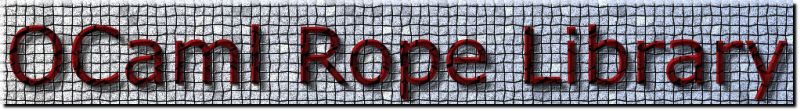

|  |
|
|
|
As its name implies, the OCaml Rope library implements the
immutable
rope
datastructure [1] (with some small variations).
All meaningful
Here is an example use of Rope.mli.
If you have questions, suggestions, bugs,... you can contact
me by
email: chris_77@users.sourceforge.netThe code is released under the GNU Lesser General Public License (LGPL) with the same special exception as for the OCaml standard library (see the file LICENSE for more details). [1] Hans Boehm, Russ Atkinson, Michael Plass, "Ropes: an alternative to strings", Software Practice and Experience 25, vol. 12 (1995), pp. 1315-1330. |